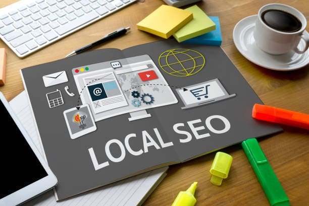
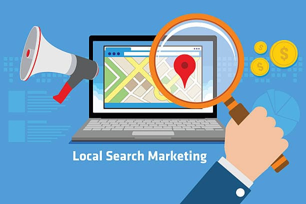

Served 1000+ Clients all Across the Globe

By optimizing your Local Search Engine Optimization (Local SEO), you can ensure your business stands out in local search results, leading to more calls, visits, and sales from customers in your area. Companies that prioritize local SEO often see strong returns because they effectively target the people most likely to become customers.
i2Tech Digital Solutions provides customized local SEO services to help your business rank higher in local searches and grow consistently.
Strengthen Your Digital Presence and Connect with Local Customers

That’s a great summary of local SEO! If you need more details or tips on how to implement local SEO strategies effectively, feel free to ask. Whether it’s optimizing your Google My Business profile, managing local reviews, or improving local keywords, I’m here to help!
